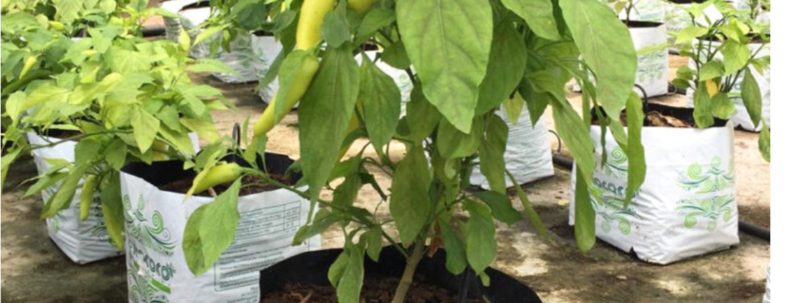

We measure and value every partner's contribution
Thanks to the hard work and commitment of our partners, we have been able to reduce the amount of virgin plastic dumped into the environment. Together we reduce our plastic footprint and re-use this material we cannot live without.
Brands packaging responsibly
Growers, manufacturers and exporters who have moved to recycled or biodegradable packaging with us.


Recognised as a responsible organisation.
Customers are moving towards eco-friendly options and demanding alternatives that reduce plastic waste dumped into landfills and the ocean.
Use our logo and website details on your products — customised for you — marking your organisation as one that fulfils customer demand to be environmentally friendly.
Every kilogram you divert is recorded in the milestones below and published on this platform — measured, not estimated.
Every kilogram, accounted for.
Amount of sustainable material used to date in our production, by partner and product.